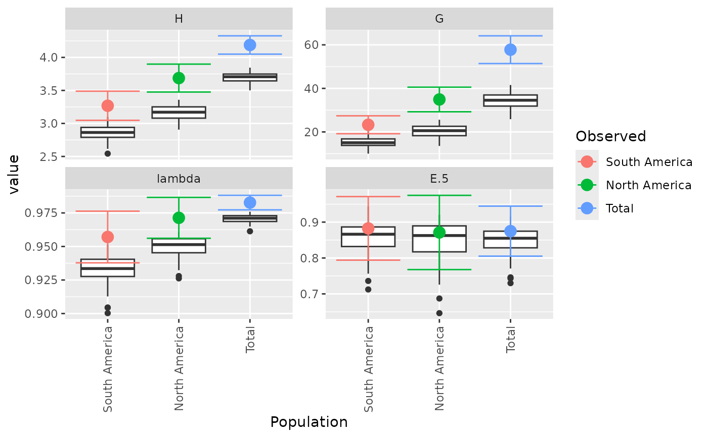

Perform bootstrap statistics, calculate, and plot confidence intervals.
Source:R/bootstraping.R
diversity_ci.RdThis function is for calculating bootstrap statistics and their confidence intervals. It is important to note that the calculation of confidence intervals is not perfect (See Details). Please be cautious when interpreting the results.
Usage
diversity_ci(
tab,
n = 1000,
n.boot = 1L,
ci = 95,
total = TRUE,
rarefy = FALSE,
n.rare = 10,
plot = TRUE,
raw = TRUE,
center = TRUE,
...
)Arguments
- tab
a
adegenet::genind(),genclone(),snpclone(), OR a matrix produced frommlg.table().- n
an integer defining the number of bootstrap replicates (defaults to 1000).
- n.boot
an integer specifying the number of samples to be drawn in each bootstrap replicate. If
n.boot< 2 (default), the number of samples drawn for each bootstrap replicate will be equal to the number of samples in the data set. See Details.- ci
the percent for confidence interval.
- total
argument to be passed on to
mlg.table()iftabis a genind object.- rarefy
if
TRUE, bootstrapping will be performed on the smallest population size or the value ofn.rare, whichever is larger. Defaults toFALSE, indicating that bootstrapping will be performed respective to each population size.- n.rare
an integer specifying the smallest size at which to resample data. This is only used if
rarefy = TRUE.- plot
If
TRUE(default), boxplots will be produced for each population, grouped by statistic. Colored dots will indicate the observed value.This plot can be retrieved by usingp <- last_plot()from the ggplot2 package.- raw
if
TRUE(default) a list containing three elements will be returned- center
if
TRUE(default), the confidence interval will be centered around the observed statistic. Otherwise, ifFALSE, the confidence interval will be bias-corrected normal CI as reported fromboot::boot.ci()- ...
parameters to be passed on to
boot::boot()anddiversity_stats()
Value
raw = TRUE
obs a matrix with observed statistics in columns, populations in rows
est a matrix with estimated statistics in columns, populations in rows
CI an array of 3 dimensions giving the lower and upper bound, the index measured, and the population.
boot a list containing the output of
boot::boot()for each population.
Details
Bootstrapping
For details on the bootstrapping procedures, see
diversity_boot(). Default bootstrapping is performed by
sampling N samples from a multinomial distribution weighted by the
relative multilocus genotype abundance per population where N is
equal to the number of samples in the data set. If n.boot > 2,
then n.boot samples are taken at each bootstrap replicate. When
rarefy = TRUE, then samples are taken at the smallest population
size without replacement. This will provide confidence intervals for all
but the smallest population.
Confidence intervals
Confidence intervals are derived from the function
boot::norm.ci(). This function will attempt to correct for bias
between the observed value and the bootstrapped estimate. When center = TRUE (default), the confidence interval is calculated from the
bootstrapped distribution and centered around the bias-corrected estimate
as prescribed in Marcon (2012). This method can lead to undesirable
properties, such as the confidence interval lying outside of the maximum
possible value. For rarefaction, the confidence interval is simply
determined by calculating the percentiles from the bootstrapped
distribution. If you want to calculate your own confidence intervals, you
can use the results of the permutations stored in the $boot element
of the output.
Note
Confidence interval calculation
Almost all of the statistics supplied here have a maximum when all genotypes are equally represented. This means that bootstrapping the samples will always be downwardly biased. In many cases, the confidence intervals from the bootstrapped distribution will fall outside of the observed statistic. The reported confidence intervals here are reported by assuming the variance of the bootstrapped distribution is the same as the variance around the observed statistic. As different statistics have different properties, there will not always be one clear method for calculating confidence intervals. A suggestion for correction in Shannon's index is to center the CI around the observed statistic (Marcon, 2012), but there are theoretical limitations to this. For details, see https://stats.stackexchange.com/q/156235/49413.
User-defined functions
While it is possible to use custom functions with this, there are three important things to remember when using these functions:
1. The function must return a single value.
2. The function must allow for both matrix and vector inputs
3. The function name cannot match or partially match any arguments
from [boot::boot()]Anonymous functions are okay
(e.g. function(x) vegan::rarefy(t(as.matrix(x)), 10)).
References
Marcon, E., Herault, B., Baraloto, C. and Lang, G. (2012). The Decomposition of Shannon’s Entropy and a Confidence Interval for Beta Diversity. Oikos 121(4): 516-522.
Examples
library(poppr)
data(Pinf)
diversity_ci(Pinf, n = 100L)
#>
#> Confidence Intervals have been centered around observed statistic.
#> Please see ?diversity_ci for details.

#> $obs
#> Index
#> Pop H G lambda E.5
#> South America 3.267944 23.29032 0.9570637 0.8825297
#> North America 3.687013 34.90909 0.9713542 0.8711297
#> Total 4.188215 57.78125 0.9826933 0.8748360
#>
#> $est
#> Index
#> Pop H G lambda E.5
#> South America 2.855214 15.17494 0.9327839 0.8574227
#> North America 3.163415 20.35646 0.9498003 0.8465828
#> Total 3.702319 34.65811 0.9708924 0.8480892
#>
#> $CI
#> , , Pop = South America
#>
#> Index
#> CI H G lambda E.5
#> 2.5 % 3.047397 19.18016 0.9378008 0.7939757
#> 97.5 % 3.488491 27.40048 0.9763266 0.9710838
#>
#> , , Pop = North America
#>
#> Index
#> CI H G lambda E.5
#> 2.5 % 3.475697 29.25703 0.9561136 0.7677254
#> 97.5 % 3.898329 40.56116 0.9865947 0.9745341
#>
#> , , Pop = Total
#>
#> Index
#> CI H G lambda E.5
#> 2.5 % 4.049658 51.41522 0.9772812 0.8051548
#> 97.5 % 4.326771 64.14728 0.9881055 0.9445172
#>
#>
#> $boot
#> $boot$`South America`
#>
#> PARAMETRIC BOOTSTRAP
#>
#>
#> Call:
#> boot::boot(data = xi, statistic = boot_stats, R = n, sim = "parametric",
#> ran.gen = rg, mle = mle, H = H, G = G, lambda = lambda, E5 = E5)
#>
#>
#> Bootstrap Statistics :
#> original bias std. error
#> t1* 3.2679442 -0.41273054 0.112526118
#> t2* 23.2903226 -8.11538035 2.097059903
#> t3* 0.9570637 -0.02427978 0.009828197
#> t4* 0.8825297 -0.02510705 0.045181447
#>
#> $boot$`North America`
#>
#> PARAMETRIC BOOTSTRAP
#>
#>
#> Call:
#> boot::boot(data = xi, statistic = boot_stats, R = n, sim = "parametric",
#> ran.gen = rg, mle = mle, H = H, G = G, lambda = lambda, E5 = E5)
#>
#>
#> Bootstrap Statistics :
#> original bias std. error
#> t1* 3.6870132 -0.52359864 0.107816353
#> t2* 34.9090909 -14.55262941 2.883759845
#> t3* 0.9713542 -0.02155382 0.007775934
#> t4* 0.8711297 -0.02454698 0.052758309
#>
#> $boot$Total
#>
#> PARAMETRIC BOOTSTRAP
#>
#>
#> Call:
#> boot::boot(data = xi, statistic = boot_stats, R = n, sim = "parametric",
#> ran.gen = rg, mle = mle, H = H, G = G, lambda = lambda, E5 = E5)
#>
#>
#> Bootstrap Statistics :
#> original bias std. error
#> t1* 4.1882146 -0.48589530 0.070693294
#> t2* 57.7812500 -23.12314189 3.248035918
#> t3* 0.9826933 -0.01180097 0.002761336
#> t4* 0.8748360 -0.02674681 0.035552309
#>
#>
if (FALSE) { # \dontrun{
# With pretty results
diversity_ci(Pinf, n = 100L, raw = FALSE)
# This can be done in a parallel fasion (OSX uses "multicore", Windows uses "snow")
system.time(diversity_ci(Pinf, 10000L, parallel = "multicore", ncpus = 4L))
system.time(diversity_ci(Pinf, 10000L))
# We often get many requests for a clonal fraction statistic. As this is
# simply the number of observed MLGs over the number of samples, we
# recommended that people calculate it themselves. With this function, you
# can add it in:
CF <- function(x){
x <- drop(as.matrix(x))
if (length(dim(x)) > 1){
res <- rowSums(x > 0)/rowSums(x)
} else {
res <- sum(x > 0)/sum(x)
}
return(res)
}
# Show pretty results
diversity_ci(Pinf, 1000L, CF = CF, center = TRUE, raw = FALSE)
diversity_ci(Pinf, 1000L, CF = CF, rarefy = TRUE, raw = FALSE)
} # }